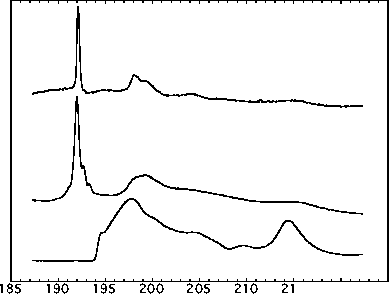
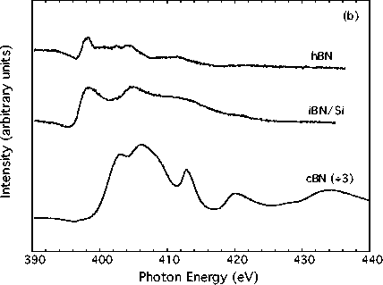

Figure 1a: Normal-incidence B 1s absorption
spectra of the three types of BN. The spectra have been
vertically offset and the cBN spectrum divided by 3 for
clarity. Top, hBN powder; center, iBN/Si; bottom, cBN powder.
The feature near 192.0 eV has p* final-state character, while
the bands above about 194 eV have s* final-state character.
As expected, the cBN shows only s-bonding.

(b) Normal-incidence N 1s absorption spectra of the three
types of BN. The spectra have been offset as in (a). Once
again, lower-energy p* features are prominent in the hBN and
iBN.